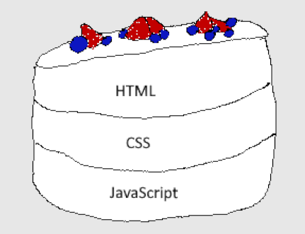
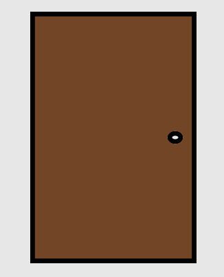

What is JavaScript?
When I was first interested in learning how to code, I found most online courses were only teaching Java and JavaScript. I had only heard bad things about the two, specifically JavaScript. All the best languages were Python and C++, and I jumped into some game development videos without knowing a single thing about coding- I do not recommend this. But I just want to code!
JavaScript can be used for many things like apps and games, but its primary usage is for websites. All browsers can run it and it integrates well with CSS and HTML, which are both fundamental to web development.
There is beauty in simplicity- JavaScript is a straightforward and ridgid language but extremely versatile and flexible. The possibilities are endless and it is a great language to start with.
Imagine a cake- my favorite is chantilly so that's the cake I will draw.
JavaScript is the third layer in this very delicious looking cake. It sits below HTML and CSS. My first website was entirely created on Neocities using only HTML and CSS. It worked, but there wasn't much functionality until JavaScript was introduced. However, I strongly recommend you learn both HTML and CSS before learning JavaScript. Remember, it is the third layer in the cake!
If we were to create a door, we could draw a box and a circle for the door knob.
Now let's paint it.
So now we have a door, but that's all we have! It serves no purpose. We were able to create it and make it look pretty, but it doesn't do much else. This is where JavaScript comes in handy. Try clicking on the door.
JavaScript allows us to create dynamic behavior and give us FUNCTIONALITY!